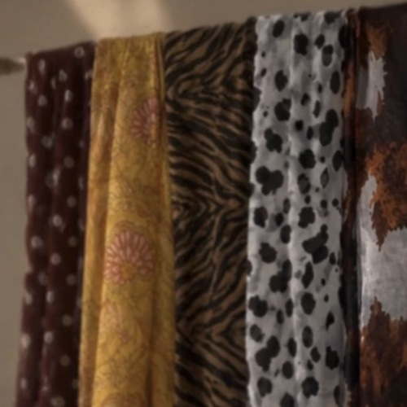
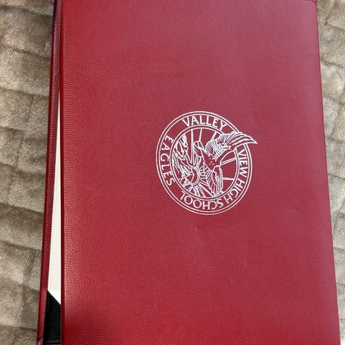
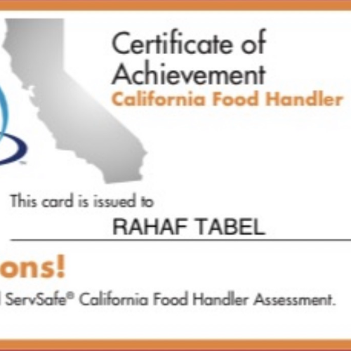
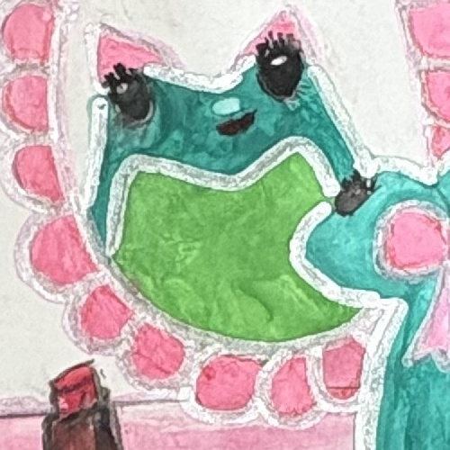

I am a first-year Neuroscience student at the University of California, Riverside. I am interested in understanding the brain, human behavior, and the biological processes that shape everyday life. I am mainly interested iin the way the brain works and influcnes the way people thing, learn, and interact with the world around them. As i continue my education, I hope to build a stronger foundation in neuroscience and explore the different areas of study and research within the field. Studying neurscience gives me the opportunity to explore these questions while continue to learn about something I find meaningful and suited.
Throughout high school, I was involved in many student organizations tat allowed me to develop leadership, communication, teamwork, and organizational skills. I served as Vice President of the Muslim Student Association after previously being involved in the organization as Treasurer. Through this experience, I helped organize activities, support student involvement, and work with other officers to create opportunities for students to connect with one another. being apart of the organization really showed me the key of working as a team, listening to different perspectives and contributing to a welcoming place.
I also served as Secretary and Co-Founder of Know Your Rights, a student led ogranization focused on student awareness and education, fidning themselves and the historical matters that students should know. Being part of this organzation gave me the opportunity to help make its development and participate in planning, as well as joining students all together to learn more about their rights and greater historical events. I enjoyed being involved in an organation that encouraged students to become much more informed and ask questions, and learn topics that affect their community.
Besides of the student organizations, I volunteered as a teacher Assistant at Masjid Arabic School, where I helped elemetary school students with Arabic lessons and supported teachers with classroom activities. This experience helped me develop responsibility and the ability to communicate with students of all ages. It also allowed me to know the value of supporting others in their learning, grasping the value that students should be understood, not expected.
Furthermore, outside of academics, I am also a co-founder of yabanaat, a modest fashion and hijab brand, where we create fashionable prints and hijabs people can feel much better wearing and confident. Through this project, I have been involved in developing the brand, working with hijab desighns, and contributing to its creative area, such as my creative interest for painting and drawing things that i like. This experience has allowed me to explore entrepreneurship, creativity, and collaboration.
As I continue my studies at UC Riverside, I look forward to exploring opportunities to learn more about neuroscience, gain research experience, and become comfortable in my university community. I am interested in discovering how what i learn in the classroom can connect to real life questions and opportunities. I hope to meet people with similar interests, learn from professors and fellow students, and become involved in experiences that strengthen my understanding of the area I love. My goal is to keep on developing both academic and personal studies while building experiences that will support my furture dreams.
• Helped lead and organize MSA activities and events
• Supported student involvement and communication during the events
• Worked with other officers to help organize club initiatives
• Assisted elementary school students with Arabic lessons
• Supported teachers with classroom activities and student learning
• Helped establish and support a student led organization
• Served as Secretary and contributed to planning
• Supported initiatives focused on student awareness
• Brought students to understand their rights and historical moments



